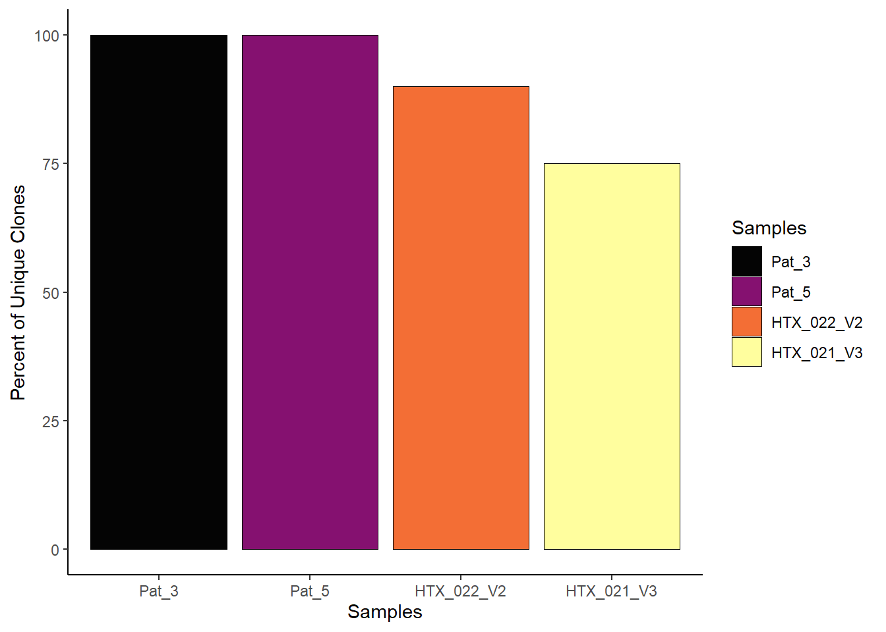
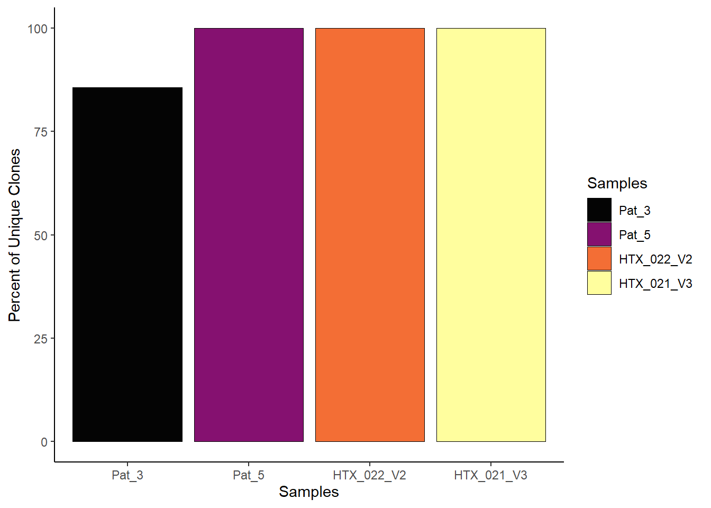
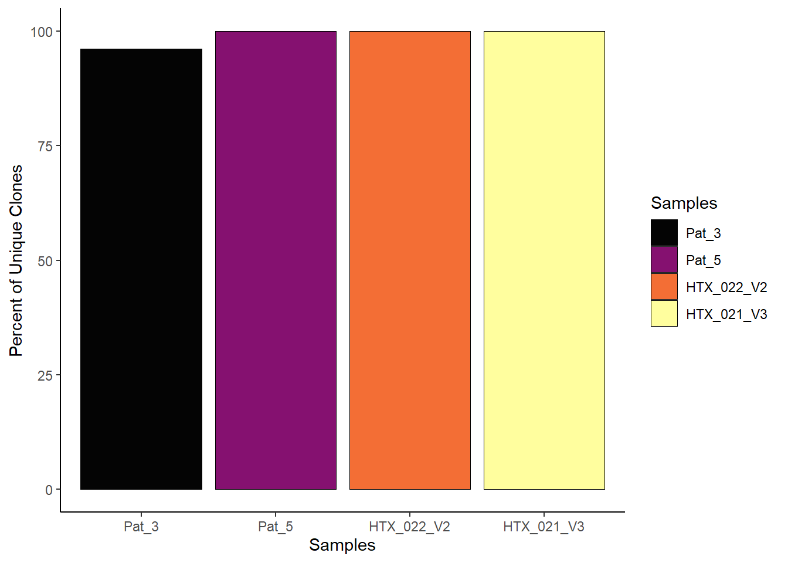

HTx_TCR_analysis
2025-07-08
Last updated: 2025-07-09
Checks: 5 2
Knit directory: HTx_TCR_analysis/
This reproducible R Markdown analysis was created with workflowr (version 1.7.1). The Checks tab describes the reproducibility checks that were applied when the results were created. The Past versions tab lists the development history.
The R Markdown is untracked by Git. To know which version of the R
Markdown file created these results, you’ll want to first commit it to
the Git repo. If you’re still working on the analysis, you can ignore
this warning. When you’re finished, you can run
wflow_publish to commit the R Markdown file and build the
HTML.
Great job! The global environment was empty. Objects defined in the global environment can affect the analysis in your R Markdown file in unknown ways. For reproduciblity it’s best to always run the code in an empty environment.
The command set.seed(20250708) was run prior to running
the code in the R Markdown file. Setting a seed ensures that any results
that rely on randomness, e.g. subsampling or permutations, are
reproducible.
Great job! Recording the operating system, R version, and package versions is critical for reproducibility.
Nice! There were no cached chunks for this analysis, so you can be confident that you successfully produced the results during this run.
Using absolute paths to the files within your workflowr project makes it difficult for you and others to run your code on a different machine. Change the absolute path(s) below to the suggested relative path(s) to make your code more reproducible.
| absolute | relative |
|---|---|
| C:/R/HTx_TCR_analysis/data/389331_5-2_TCR_20250603_Hu_nuseq_VDJ_V3_exp_pat3_cellRangerVDJ/outs/filtered_contig_annotations.csv | data/389331_5-2_TCR_20250603_Hu_nuseq_VDJ_V3_exp_pat3_cellRangerVDJ/outs/filtered_contig_annotations.csv |
| C:/R/HTx_TCR_analysis/data/389331_6-3_TCR_20250603_Hu_nuseq_VDJ_V3_exp_pat5_cellRangerVDJ/outs/filtered_contig_annotations.csv | data/389331_6-3_TCR_20250603_Hu_nuseq_VDJ_V3_exp_pat5_cellRangerVDJ/outs/filtered_contig_annotations.csv |
| C:/R/HTx_TCR_analysis/data/389331_7-4_TCR_20250610_Hu_nuseq_VDJ_V3_HTx_022_V2_cellRangerVDJ/outs/filtered_contig_annotations.csv | data/389331_7-4_TCR_20250610_Hu_nuseq_VDJ_V3_HTx_022_V2_cellRangerVDJ/outs/filtered_contig_annotations.csv |
| C:/R/HTx_TCR_analysis/data/389331_8-5_TCR_20250610_Hu_nuseq_VDJ_V3_HTx_021_V3_cellRangerVDJ/outs/filtered_contig_annotations.csv | data/389331_8-5_TCR_20250610_Hu_nuseq_VDJ_V3_HTx_021_V3_cellRangerVDJ/outs/filtered_contig_annotations.csv |
Great! You are using Git for version control. Tracking code development and connecting the code version to the results is critical for reproducibility.
The results in this page were generated with repository version a120f50. See the Past versions tab to see a history of the changes made to the R Markdown and HTML files.
Note that you need to be careful to ensure that all relevant files for
the analysis have been committed to Git prior to generating the results
(you can use wflow_publish or
wflow_git_commit). workflowr only checks the R Markdown
file, but you know if there are other scripts or data files that it
depends on. Below is the status of the Git repository when the results
were generated:
Ignored files:
Ignored: .Rhistory
Ignored: .Rproj.user/
Ignored: analysis/.Rhistory
Ignored: data/389331_5-2_TCR_20250603_Hu_nuseq_VDJ_V3_exp_pat3_cellRangerVDJ/
Ignored: data/389331_6-3_TCR_20250603_Hu_nuseq_VDJ_V3_exp_pat5_cellRangerVDJ/
Ignored: data/389331_7-4_TCR_20250610_Hu_nuseq_VDJ_V3_HTx_022_V2_cellRangerVDJ/
Ignored: data/389331_8-5_TCR_20250610_Hu_nuseq_VDJ_V3_HTx_021_V3_cellRangerVDJ/
Ignored: data/GEX/
Untracked files:
Untracked: analysis/VDJ_TCR_repertoire.Rmd
Unstaged changes:
Modified: analysis/HTx_TCR_analysis_knit.Rmd
Modified: analysis/index.Rmd
Note that any generated files, e.g. HTML, png, CSS, etc., are not included in this status report because it is ok for generated content to have uncommitted changes.
There are no past versions. Publish this analysis with
wflow_publish() to start tracking its development.
R Markdown
load packages
Make the list with TCR sequences
Pat_3 = "C:/R/HTx_TCR_analysis/data/389331_5-2_TCR_20250603_Hu_nuseq_VDJ_V3_exp_pat3_cellRangerVDJ/outs/filtered_contig_annotations.csv"
Pat_5 = "C:/R/HTx_TCR_analysis/data/389331_6-3_TCR_20250603_Hu_nuseq_VDJ_V3_exp_pat5_cellRangerVDJ/outs/filtered_contig_annotations.csv"
HTX_022_V2 = "C:/R/HTx_TCR_analysis/data/389331_7-4_TCR_20250610_Hu_nuseq_VDJ_V3_HTx_022_V2_cellRangerVDJ/outs/filtered_contig_annotations.csv"
HTX_021_V3 = "C:/R/HTx_TCR_analysis/data/389331_8-5_TCR_20250610_Hu_nuseq_VDJ_V3_HTx_021_V3_cellRangerVDJ/outs/filtered_contig_annotations.csv"
list_contig <- list(
Pat_3 = read.csv(Pat_3),
Pat_5 = read.csv(Pat_5),
HTX_022_V2 = read.csv(HTX_022_V2),
HTX_021_V3 = read.csv(HTX_021_V3)
)
# Combine TCR data
combined.TCR <- combineTCR(
list_contig,
samples = names(list_contig),
)
head(combined.TCR[[1]]) barcode sample TCR1 cdr3_aa1
1 Pat_3_AACACGCTCCGACGCA-1 Pat_3 <NA> <NA>
2 Pat_3_AAGGGGCTCGGCATTA-1 Pat_3 TRAV13-2.TRAJ23.TRAC CAENPNQGGKLIF
3 Pat_3_AAGTTCCCAGTCCACA-1 Pat_3 <NA> <NA>
4 Pat_3_AAGTTCGTCCCATCAT-1 Pat_3 <NA> <NA>
5 Pat_3_ACATCTCTCCCTGATT-1 Pat_3 <NA> <NA>
6 Pat_3_AGCAGATAGCTGTTGA-1 Pat_3 <NA> <NA>
cdr3_nt1 TCR2 cdr3_aa2
1 <NA> TRBV7-9.NA.TRBJ2-1.TRBC2 CASSPNYEQFF
2 TGTGCAGAGAATCCTAACCAGGGAGGAAAGCTTATCTTC <NA> <NA>
3 <NA> TRBV27.NA.TRBJ2-5.TRBC2 CASSLSGPLETQYF
4 <NA> TRBV2.NA.TRBJ2-3.TRBC2 CASSPTSGGDTQYF
5 <NA> TRBV19.NA.TRBJ2-6.TRBC2 CASSIGHSGANVLTF
6 <NA> TRBV20-1.TRBD2.TRBJ2-1.TRBC2 CSARLAGGPVGRNEQFF
cdr3_nt2 CTgene
1 TGTGCCAGCAGCCCCAATTATGAGCAGTTCTTC NA_TRBV7-9.NA.TRBJ2-1.TRBC2
2 <NA> TRAV13-2.TRAJ23.TRAC_NA
3 TGTGCCAGCAGTTTATCCGGCCCGTTGGAGACCCAGTACTTC NA_TRBV27.NA.TRBJ2-5.TRBC2
4 TGTGCCAGCAGTCCGACTAGCGGGGGAGATACGCAGTATTTT NA_TRBV2.NA.TRBJ2-3.TRBC2
5 TGTGCCAGTAGTATAGGGCACTCTGGGGCCAACGTCCTGACTTTC NA_TRBV19.NA.TRBJ2-6.TRBC2
6 TGCAGTGCTAGACTAGCGGGGGGGCCGGTGGGTCGGAATGAGCAGTTCTTC NA_TRBV20-1.TRBD2.TRBJ2-1.TRBC2
CTnt CTaa
1 NA_TGTGCCAGCAGCCCCAATTATGAGCAGTTCTTC NA_CASSPNYEQFF
2 TGTGCAGAGAATCCTAACCAGGGAGGAAAGCTTATCTTC_NA CAENPNQGGKLIF_NA
3 NA_TGTGCCAGCAGTTTATCCGGCCCGTTGGAGACCCAGTACTTC NA_CASSLSGPLETQYF
4 NA_TGTGCCAGCAGTCCGACTAGCGGGGGAGATACGCAGTATTTT NA_CASSPTSGGDTQYF
5 NA_TGTGCCAGTAGTATAGGGCACTCTGGGGCCAACGTCCTGACTTTC NA_CASSIGHSGANVLTF
6 NA_TGCAGTGCTAGACTAGCGGGGGGGCCGGTGGGTCGGAATGAGCAGTTCTTC NA_CSARLAGGPVGRNEQFF
CTstrict
1 NA;NA_TRBV7-9.NA.TRBJ2-1.TRBC2;TGTGCCAGCAGCCCCAATTATGAGCAGTTCTTC
2 TRAV13-2.TRAJ23.TRAC;TGTGCAGAGAATCCTAACCAGGGAGGAAAGCTTATCTTC_NA;NA
3 NA;NA_TRBV27.NA.TRBJ2-5.TRBC2;TGTGCCAGCAGTTTATCCGGCCCGTTGGAGACCCAGTACTTC
4 NA;NA_TRBV2.NA.TRBJ2-3.TRBC2;TGTGCCAGCAGTCCGACTAGCGGGGGAGATACGCAGTATTTT
5 NA;NA_TRBV19.NA.TRBJ2-6.TRBC2;TGTGCCAGTAGTATAGGGCACTCTGGGGCCAACGTCCTGACTTTC
6 NA;NA_TRBV20-1.TRBD2.TRBJ2-1.TRBC2;TGCAGTGCTAGACTAGCGGGGGGGCCGGTGGGTCGGAATGAGCAGTTCTTCExport the information of clones
Count the percentage of unique clones
##unique clones based on TCR-beta chain
clonalQuant(combined.TCR,
cloneCall="aa",
chain = c("TRB"),
scale = TRUE)
##unique clones based on TCR-alpha chain
clonalQuant(combined.TCR,
cloneCall="aa",
chain = c("TRA"),
scale = TRUE)
##unique clones based on paired TCR-alpha and -beta chain
clonalQuant(combined.TCR,
cloneCall="aa",
chain = c("both"),
scale = TRUE)
Different analysis with sscRepertoire function
The length of CDR3 sequences
##Check length distribution of the CDR3 sequences
clonalLength(combined.TCR,
cloneCall="aa",
chain = "both") 
Check the clones between samples or conditions
##Check clones between samples and changes in dynamics (for instance - shared clones)
##clones between samples based on TCR-beta chain
clonalCompare(combined.TCR,
chain = "TRB",
samples = c("Pat_3", "Pat_5","HTX_022_V2","HTX_021_V3"),
cloneCall="aa",
graph = "alluvial")
##clones between samples based on TCR-alpha chain
clonalCompare(combined.TCR,
chain = "TRA",
samples = c("Pat_3", "Pat_5","HTX_022_V2","HTX_021_V3"),
cloneCall="aa",
graph = "alluvial")
##clones between samples based on paired TCR-alpha and -beta chain
clonalCompare(combined.TCR,
chain = "both",
samples = c("Pat_3", "Pat_5","HTX_022_V2","HTX_021_V3"),
cloneCall="aa",
graph = "alluvial")
Check the proportion of clones
clonalHomeostasis(combined.TCR,
cloneCall = "gene")
##clonal proportion places clones into separate bins
clonalProportion(combined.TCR,
cloneCall = "gene",
clonalSplit = c(1, 5, 10, 100, 1000, 10000))  ### Different analysis with scRepertoire function in sequences {.tabset}
#### Quantify the proportion of amino acids
### Different analysis with scRepertoire function in sequences {.tabset}
#### Quantify the proportion of amino acids
##Quantify the proportion of amino acids along the cdr3 sequence with
percentAA(combined.TCR,
chain = "TRB",
aa.length = 20)
Quantify the level of entropy
##quantify the level of entropy/diversity across amino acid residues along the cdr3 sequence
positionalEntropy(combined.TCR,
chain = "TRB",
aa.length = 20)
Quantify the proportion of V or J gene usage
##Quantify the proportion of V or J gene usage
percentGenes(combined.TCR,
chain = "TRB",
gene = "Vgene")
Quantification of the composition of the CDR3 sequence
##Another quantification of the composition of the CDR3 sequence is to define motifs by sliding across the amino acid or nucleotide sequences at set intervals resulting in substrings or kmers.
percentKmer(combined.TCR,
cloneCall = "aa",
chain = "TRB",
motif.length = 3,
top.motifs = 25)
Diversity metrics
##Diversity metrics calculated, include: “shannon”, “inv.simpson”, “norm.entropy”, “gini.simpson”, “chao1”, and “ACE”.
clonalDiversity(combined.TCR,
metrics = c("shannon", "ACE"),
cloneCall = "gene",
n.boots = 20)
clonalRarefaction(combined.TCR,
plot.type = 2,
hill.numbers = 0,
n.boots = 2)
clonalOverlap(combined.TCR,
cloneCall = "strict",
method = "morisita")
session info
date()[1] "Wed Jul 9 15:03:50 2025"sessionInfo()R version 4.4.1 (2024-06-14 ucrt)
Platform: x86_64-w64-mingw32/x64
Running under: Windows 11 x64 (build 22631)
Matrix products: default
locale:
[1] LC_COLLATE=English_United States.utf8 LC_CTYPE=English_United States.utf8
[3] LC_MONETARY=English_United States.utf8 LC_NUMERIC=C
[5] LC_TIME=English_United States.utf8
time zone: Europe/Berlin
tzcode source: internal
attached base packages:
[1] grid stats4 stats graphics grDevices utils datasets methods base
other attached packages:
[1] writexl_1.5.4 scRepertoire_2.0.7 kableExtra_1.4.0
[4] knitr_1.50 magrittr_2.0.3 RColorBrewer_1.1-3
[7] NCmisc_1.2.0 VennDiagram_1.7.3 futile.logger_1.4.3
[10] ggupset_0.4.1 gridExtra_2.3 DOSE_3.30.5
[13] enrichplot_1.24.4 msigdbr_24.1.0 org.Hs.eg.db_3.19.1
[16] AnnotationDbi_1.66.0 clusterProfiler_4.12.6 multtest_2.60.0
[19] metap_1.12 scater_1.32.1 scuttle_1.14.0
[22] destiny_3.18.0 circlize_0.4.16 muscat_1.18.0
[25] viridis_0.6.5 viridisLite_0.4.2 lubridate_1.9.4
[28] forcats_1.0.0 stringr_1.5.1 purrr_1.0.4
[31] readr_2.1.5 tidyr_1.3.1 tibble_3.2.1
[34] tidyverse_2.0.0 dplyr_1.1.4 SingleCellExperiment_1.26.0
[37] SummarizedExperiment_1.34.0 Biobase_2.64.0 GenomicRanges_1.56.2
[40] GenomeInfoDb_1.40.1 IRanges_2.38.1 S4Vectors_0.42.1
[43] BiocGenerics_0.50.0 MatrixGenerics_1.16.0 matrixStats_1.5.0
[46] pheatmap_1.0.13 ggpubr_0.6.1 ggplot2_3.5.2
[49] Seurat_5.3.0 SeuratObject_5.1.0 sp_2.2-0
[52] runSeurat3_0.1.0 ExploreSCdataSeurat3_0.1.0
loaded via a namespace (and not attached):
[1] hash_2.2.6.3 igraph_2.1.4 ica_1.0-3
[4] plotly_4.11.0 Formula_1.2-5 zlibbioc_1.50.0
[7] tidyselect_1.2.1 bit_4.6.0 doParallel_1.0.17
[10] clue_0.3-66 lattice_0.22-6 rjson_0.2.23
[13] evmix_2.12 blob_1.2.4 S4Arrays_1.4.1
[16] pbkrtest_0.5.4 parallel_4.4.1 png_0.1-8
[19] plotrix_3.8-4 cli_3.6.3 ggplotify_0.1.2
[22] goftest_1.2-3 VIM_6.2.2 variancePartition_1.34.0
[25] textshaping_1.0.1 BiocNeighbors_1.22.0 stringdist_0.9.15
[28] shadowtext_0.1.5 uwot_0.2.3 curl_6.4.0
[31] tidytree_0.4.6 mime_0.12 evaluate_1.0.4
[34] ComplexHeatmap_2.20.0 stringi_1.8.7 backports_1.5.0
[37] gsl_2.1-8 lmerTest_3.1-3 qqconf_1.3.2
[40] httpuv_1.6.15 rappdirs_0.3.3 splines_4.4.1
[43] ggraph_2.2.1 sctransform_0.4.2 ggbeeswarm_0.7.2
[46] DBI_1.2.3 jquerylib_0.1.4 smoother_1.3
[49] withr_3.0.2 git2r_0.36.2 corpcor_1.6.10
[52] systemfonts_1.2.3 reformulas_0.4.1 class_7.3-22
[55] rprojroot_2.0.4 lmtest_0.9-40 tidygraph_1.3.1
[58] formatR_1.14 colourpicker_1.3.0 htmlwidgets_1.6.4
[61] fs_1.6.6 ggrepel_0.9.6 labeling_0.4.3
[64] fANCOVA_0.6-1 SparseArray_1.4.8 DESeq2_1.44.0
[67] ranger_0.17.0 DEoptimR_1.1-3-1 reticulate_1.42.0
[70] hexbin_1.28.5 zoo_1.8-14 XVector_0.44.0
[73] ggplot.multistats_1.0.1 UCSC.utils_1.0.0 RhpcBLASctl_0.23-42
[76] timechange_0.3.0 foreach_1.5.2 patchwork_1.3.1
[79] caTools_1.18.3 data.table_1.17.6 ggtree_3.12.0
[82] quantreg_6.1 R.oo_1.27.1 RSpectra_0.16-2
[85] irlba_2.3.5.1 fastDummies_1.7.5 gridGraphics_0.5-1
[88] lazyeval_0.2.2 yaml_2.3.10 survival_3.6-4
[91] scattermore_1.2 crayon_1.5.3 RcppAnnoy_0.0.22
[94] progressr_0.15.1 tweenr_2.0.3 later_1.3.2
[97] ggridges_0.5.6 codetools_0.2-20 GlobalOptions_0.1.2
[100] aod_1.3.3 KEGGREST_1.44.1 Rtsne_0.17
[103] shape_1.4.6.1 limma_3.60.6 pkgconfig_2.0.3
[106] xml2_1.3.8 TMB_1.9.17 spatstat.univar_3.1-3
[109] mathjaxr_1.8-0 EnvStats_3.1.0 evd_2.3-7.1
[112] iNEXT_3.0.1 aplot_0.2.7 scatterplot3d_0.3-44
[115] ape_5.8-1 spatstat.sparse_3.1-0 xtable_1.8-4
[118] car_3.1-3 plyr_1.8.9 httr_1.4.7
[121] rbibutils_2.3 tools_4.4.1 globals_0.18.0
[124] beeswarm_0.4.0 broom_1.0.8 nlme_3.1-164
[127] lambda.r_1.2.4 MatrixModels_0.5-4 assertthat_0.2.1
[130] lme4_1.1-37 digest_0.6.36 numDeriv_2016.8-1.1
[133] Matrix_1.7-0 farver_2.1.2 tzdb_0.4.0
[136] remaCor_0.0.18 reshape2_1.4.4 yulab.utils_0.2.0
[139] glue_1.7.0 cachem_1.1.0 polyclip_1.10-7
[142] generics_0.1.4 Biostrings_2.72.1 ggalluvial_0.12.5
[145] mvtnorm_1.3-3 parallelly_1.45.0 mnormt_2.1.1
[148] statmod_1.5.0 RcppHNSW_0.6.0 ScaledMatrix_1.12.0
[151] carData_3.0-5 minqa_1.2.8 pbapply_1.7-2
[154] httr2_1.1.2 spam_2.11-1 gson_0.1.0
[157] graphlayouts_1.2.2 gtools_3.9.5 ggsignif_0.6.4
[160] RcppEigen_0.3.4.0.2 shiny_1.11.0 GenomeInfoDbData_1.2.12
[163] glmmTMB_1.1.11 R.utils_2.13.0 memoise_2.0.1
[166] rmarkdown_2.29 scales_1.4.0 R.methodsS3_1.8.2
[169] svglite_2.2.1 future_1.58.0 RANN_2.6.1
[172] Cairo_1.6-2 spatstat.data_3.1-6 rstudioapi_0.17.1
[175] cluster_2.1.6 mutoss_0.1-13 spatstat.utils_3.1-4
[178] hms_1.1.3 fitdistrplus_1.2-3 cowplot_1.1.3
[181] colorspace_2.1-1 ggdendro_0.2.0 rlang_1.1.4
[184] DelayedMatrixStats_1.26.0 sparseMatrixStats_1.16.0 xts_0.14.1
[187] truncdist_1.0-2 dotCall64_1.2 shinydashboard_0.7.3
[190] ggforce_0.5.0 laeken_0.5.3 mgcv_1.9-1
[193] xfun_0.52 e1071_1.7-16 TH.data_1.1-3
[196] iterators_1.0.14 abind_1.4-8 GOSemSim_2.30.2
[199] treeio_1.28.0 futile.options_1.0.1 bitops_1.0-9
[202] Rdpack_2.6.4 promises_1.3.3 scatterpie_0.2.5
[205] RSQLite_2.4.1 qvalue_2.36.0 sandwich_3.1-1
[208] fgsea_1.30.0 DelayedArray_0.30.1 proxy_0.4-27
[211] GO.db_3.19.1 compiler_4.4.1 prettyunits_1.2.0
[214] boot_1.3-30 beachmat_2.20.0 SparseM_1.84-2
[217] listenv_0.9.1 Rcpp_1.0.13 edgeR_4.2.2
[220] workflowr_1.7.1 BiocSingular_1.20.0 tensor_1.5.1
[223] MASS_7.3-60.2 progress_1.2.3 BiocParallel_1.38.0
[226] cubature_2.1.4 babelgene_22.9 spatstat.random_3.4-1
[229] R6_2.6.1 fastmap_1.2.0 multcomp_1.4-28
[232] fastmatch_1.1-6 rstatix_0.7.2 vipor_0.4.7
[235] TTR_0.24.4 ROCR_1.0-11 TFisher_0.2.0
[238] rsvd_1.0.5 vcd_1.4-13 nnet_7.3-19
[241] gtable_0.3.6 KernSmooth_2.23-24 miniUI_0.1.2
[244] deldir_2.0-4 htmltools_0.5.8.1 ggthemes_5.1.0
[247] bit64_4.6.0-1 spatstat.explore_3.4-3 lifecycle_1.0.4
[250] blme_1.0-6 S7_0.2.0 nloptr_2.2.1
[253] sass_0.4.10 vctrs_0.6.5 VGAM_1.1-13
[256] robustbase_0.99-4-1 spatstat.geom_3.4-1 sn_2.1.1
[259] ggfun_0.1.9 future.apply_1.20.0 bslib_0.9.0
[262] pillar_1.10.2 gplots_3.2.0 pcaMethods_1.96.0
[265] locfit_1.5-9.12 jsonlite_2.0.0 GetoptLong_1.0.5
sessionInfo()R version 4.4.1 (2024-06-14 ucrt)
Platform: x86_64-w64-mingw32/x64
Running under: Windows 11 x64 (build 22631)
Matrix products: default
locale:
[1] LC_COLLATE=English_United States.utf8 LC_CTYPE=English_United States.utf8
[3] LC_MONETARY=English_United States.utf8 LC_NUMERIC=C
[5] LC_TIME=English_United States.utf8
time zone: Europe/Berlin
tzcode source: internal
attached base packages:
[1] grid stats4 stats graphics grDevices utils datasets methods base
other attached packages:
[1] writexl_1.5.4 scRepertoire_2.0.7 kableExtra_1.4.0
[4] knitr_1.50 magrittr_2.0.3 RColorBrewer_1.1-3
[7] NCmisc_1.2.0 VennDiagram_1.7.3 futile.logger_1.4.3
[10] ggupset_0.4.1 gridExtra_2.3 DOSE_3.30.5
[13] enrichplot_1.24.4 msigdbr_24.1.0 org.Hs.eg.db_3.19.1
[16] AnnotationDbi_1.66.0 clusterProfiler_4.12.6 multtest_2.60.0
[19] metap_1.12 scater_1.32.1 scuttle_1.14.0
[22] destiny_3.18.0 circlize_0.4.16 muscat_1.18.0
[25] viridis_0.6.5 viridisLite_0.4.2 lubridate_1.9.4
[28] forcats_1.0.0 stringr_1.5.1 purrr_1.0.4
[31] readr_2.1.5 tidyr_1.3.1 tibble_3.2.1
[34] tidyverse_2.0.0 dplyr_1.1.4 SingleCellExperiment_1.26.0
[37] SummarizedExperiment_1.34.0 Biobase_2.64.0 GenomicRanges_1.56.2
[40] GenomeInfoDb_1.40.1 IRanges_2.38.1 S4Vectors_0.42.1
[43] BiocGenerics_0.50.0 MatrixGenerics_1.16.0 matrixStats_1.5.0
[46] pheatmap_1.0.13 ggpubr_0.6.1 ggplot2_3.5.2
[49] Seurat_5.3.0 SeuratObject_5.1.0 sp_2.2-0
[52] runSeurat3_0.1.0 ExploreSCdataSeurat3_0.1.0
loaded via a namespace (and not attached):
[1] hash_2.2.6.3 igraph_2.1.4 ica_1.0-3
[4] plotly_4.11.0 Formula_1.2-5 zlibbioc_1.50.0
[7] tidyselect_1.2.1 bit_4.6.0 doParallel_1.0.17
[10] clue_0.3-66 lattice_0.22-6 rjson_0.2.23
[13] evmix_2.12 blob_1.2.4 S4Arrays_1.4.1
[16] pbkrtest_0.5.4 parallel_4.4.1 png_0.1-8
[19] plotrix_3.8-4 cli_3.6.3 ggplotify_0.1.2
[22] goftest_1.2-3 VIM_6.2.2 variancePartition_1.34.0
[25] textshaping_1.0.1 BiocNeighbors_1.22.0 stringdist_0.9.15
[28] shadowtext_0.1.5 uwot_0.2.3 curl_6.4.0
[31] tidytree_0.4.6 mime_0.12 evaluate_1.0.4
[34] ComplexHeatmap_2.20.0 stringi_1.8.7 backports_1.5.0
[37] gsl_2.1-8 lmerTest_3.1-3 qqconf_1.3.2
[40] httpuv_1.6.15 rappdirs_0.3.3 splines_4.4.1
[43] ggraph_2.2.1 sctransform_0.4.2 ggbeeswarm_0.7.2
[46] DBI_1.2.3 jquerylib_0.1.4 smoother_1.3
[49] withr_3.0.2 git2r_0.36.2 corpcor_1.6.10
[52] systemfonts_1.2.3 reformulas_0.4.1 class_7.3-22
[55] rprojroot_2.0.4 lmtest_0.9-40 tidygraph_1.3.1
[58] formatR_1.14 colourpicker_1.3.0 htmlwidgets_1.6.4
[61] fs_1.6.6 ggrepel_0.9.6 labeling_0.4.3
[64] fANCOVA_0.6-1 SparseArray_1.4.8 DESeq2_1.44.0
[67] ranger_0.17.0 DEoptimR_1.1-3-1 reticulate_1.42.0
[70] hexbin_1.28.5 zoo_1.8-14 XVector_0.44.0
[73] ggplot.multistats_1.0.1 UCSC.utils_1.0.0 RhpcBLASctl_0.23-42
[76] timechange_0.3.0 foreach_1.5.2 patchwork_1.3.1
[79] caTools_1.18.3 data.table_1.17.6 ggtree_3.12.0
[82] quantreg_6.1 R.oo_1.27.1 RSpectra_0.16-2
[85] irlba_2.3.5.1 fastDummies_1.7.5 gridGraphics_0.5-1
[88] lazyeval_0.2.2 yaml_2.3.10 survival_3.6-4
[91] scattermore_1.2 crayon_1.5.3 RcppAnnoy_0.0.22
[94] progressr_0.15.1 tweenr_2.0.3 later_1.3.2
[97] ggridges_0.5.6 codetools_0.2-20 GlobalOptions_0.1.2
[100] aod_1.3.3 KEGGREST_1.44.1 Rtsne_0.17
[103] shape_1.4.6.1 limma_3.60.6 pkgconfig_2.0.3
[106] xml2_1.3.8 TMB_1.9.17 spatstat.univar_3.1-3
[109] mathjaxr_1.8-0 EnvStats_3.1.0 evd_2.3-7.1
[112] iNEXT_3.0.1 aplot_0.2.7 scatterplot3d_0.3-44
[115] ape_5.8-1 spatstat.sparse_3.1-0 xtable_1.8-4
[118] car_3.1-3 plyr_1.8.9 httr_1.4.7
[121] rbibutils_2.3 tools_4.4.1 globals_0.18.0
[124] beeswarm_0.4.0 broom_1.0.8 nlme_3.1-164
[127] lambda.r_1.2.4 MatrixModels_0.5-4 assertthat_0.2.1
[130] lme4_1.1-37 digest_0.6.36 numDeriv_2016.8-1.1
[133] Matrix_1.7-0 farver_2.1.2 tzdb_0.4.0
[136] remaCor_0.0.18 reshape2_1.4.4 yulab.utils_0.2.0
[139] glue_1.7.0 cachem_1.1.0 polyclip_1.10-7
[142] generics_0.1.4 Biostrings_2.72.1 ggalluvial_0.12.5
[145] mvtnorm_1.3-3 parallelly_1.45.0 mnormt_2.1.1
[148] statmod_1.5.0 RcppHNSW_0.6.0 ScaledMatrix_1.12.0
[151] carData_3.0-5 minqa_1.2.8 pbapply_1.7-2
[154] httr2_1.1.2 spam_2.11-1 gson_0.1.0
[157] graphlayouts_1.2.2 gtools_3.9.5 ggsignif_0.6.4
[160] RcppEigen_0.3.4.0.2 shiny_1.11.0 GenomeInfoDbData_1.2.12
[163] glmmTMB_1.1.11 R.utils_2.13.0 memoise_2.0.1
[166] rmarkdown_2.29 scales_1.4.0 R.methodsS3_1.8.2
[169] svglite_2.2.1 future_1.58.0 RANN_2.6.1
[172] Cairo_1.6-2 spatstat.data_3.1-6 rstudioapi_0.17.1
[175] cluster_2.1.6 mutoss_0.1-13 spatstat.utils_3.1-4
[178] hms_1.1.3 fitdistrplus_1.2-3 cowplot_1.1.3
[181] colorspace_2.1-1 ggdendro_0.2.0 rlang_1.1.4
[184] DelayedMatrixStats_1.26.0 sparseMatrixStats_1.16.0 xts_0.14.1
[187] truncdist_1.0-2 dotCall64_1.2 shinydashboard_0.7.3
[190] ggforce_0.5.0 laeken_0.5.3 mgcv_1.9-1
[193] xfun_0.52 e1071_1.7-16 TH.data_1.1-3
[196] iterators_1.0.14 abind_1.4-8 GOSemSim_2.30.2
[199] treeio_1.28.0 futile.options_1.0.1 bitops_1.0-9
[202] Rdpack_2.6.4 promises_1.3.3 scatterpie_0.2.5
[205] RSQLite_2.4.1 qvalue_2.36.0 sandwich_3.1-1
[208] fgsea_1.30.0 DelayedArray_0.30.1 proxy_0.4-27
[211] GO.db_3.19.1 compiler_4.4.1 prettyunits_1.2.0
[214] boot_1.3-30 beachmat_2.20.0 SparseM_1.84-2
[217] listenv_0.9.1 Rcpp_1.0.13 edgeR_4.2.2
[220] workflowr_1.7.1 BiocSingular_1.20.0 tensor_1.5.1
[223] MASS_7.3-60.2 progress_1.2.3 BiocParallel_1.38.0
[226] cubature_2.1.4 babelgene_22.9 spatstat.random_3.4-1
[229] R6_2.6.1 fastmap_1.2.0 multcomp_1.4-28
[232] fastmatch_1.1-6 rstatix_0.7.2 vipor_0.4.7
[235] TTR_0.24.4 ROCR_1.0-11 TFisher_0.2.0
[238] rsvd_1.0.5 vcd_1.4-13 nnet_7.3-19
[241] gtable_0.3.6 KernSmooth_2.23-24 miniUI_0.1.2
[244] deldir_2.0-4 htmltools_0.5.8.1 ggthemes_5.1.0
[247] bit64_4.6.0-1 spatstat.explore_3.4-3 lifecycle_1.0.4
[250] blme_1.0-6 S7_0.2.0 nloptr_2.2.1
[253] sass_0.4.10 vctrs_0.6.5 VGAM_1.1-13
[256] robustbase_0.99-4-1 spatstat.geom_3.4-1 sn_2.1.1
[259] ggfun_0.1.9 future.apply_1.20.0 bslib_0.9.0
[262] pillar_1.10.2 gplots_3.2.0 pcaMethods_1.96.0
[265] locfit_1.5-9.12 jsonlite_2.0.0 GetoptLong_1.0.5